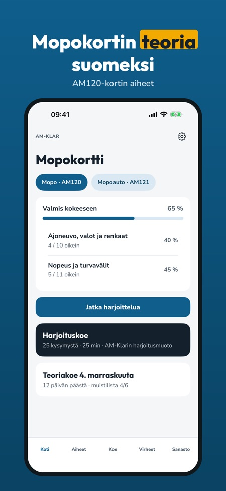
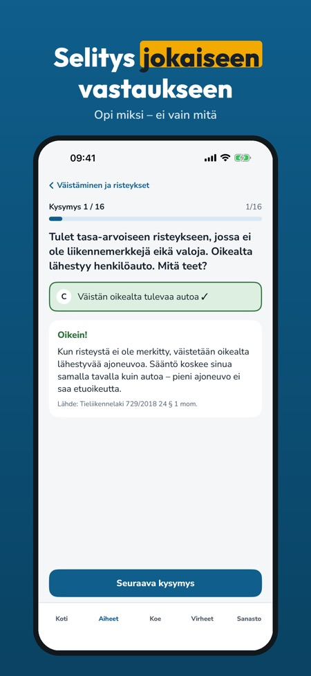
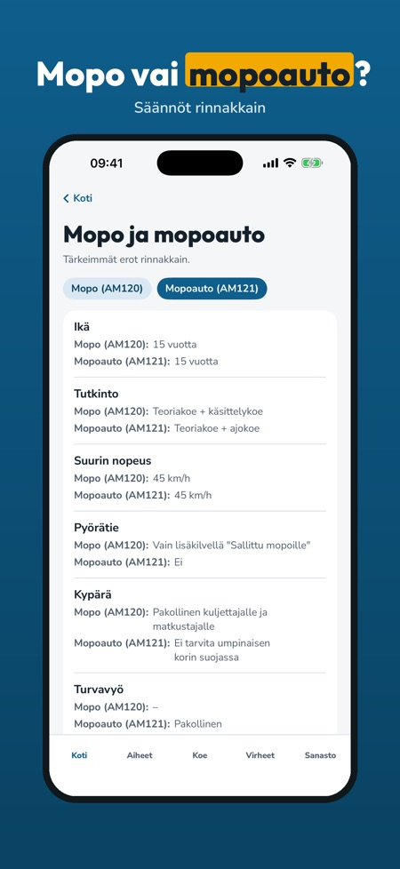

Mopon teoriakoe suomeksi. Harjoittele mopokortin teoriaa: kysymykset selityksineen, koeharjoitus ja virheiden kertaus – suomeksi ja ilman nettiä.



AM-Klar auttaa harjoittelemaan AM120-mopokortin teoriaa – mopon säännöillä, ei henkilöauton.
Voit harjoitella 20 kysymystä, tehdä yhden harjoituskokeen ja käyttää sanastoa ja tarkistuslistaa ilman ostoa. Täysi versio on kertaosto, joka avaa kaikki kysymykset, koeharjoitukset ja tilastot. Ei tilausta. Perhejako on käytössä: kun perheen aikuinen ostaa sovelluksen, saat myös täyden version.
AM-Klar on itsenäinen eikä liity Traficomiin tai Ajovarmaan. AM-Klar ei järjestä kokeita eikä myönnä ajokortteja.